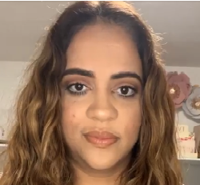
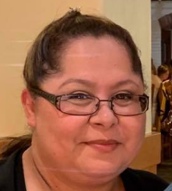
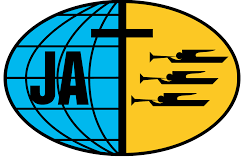

Ministerio Juvenil
Liderazgo y Recursos
Nuestros Directores
Fernando Cepero
Eduardo Castillo
 Tíffany Ruíz
Tíffany Ruíz
 Aliah Beltré
Aliah Beltré
 Kelin Leyva
Kelin Leyva

Elsy Jorge
 Dionis Leyva
Dionis Leyva
 Heiden Ojeda
Heiden Ojeda
 David Burton
David Burton
Carlos A Alejandro

Silvia Peláez
José Peláez
Colaboradoras Directas
 Aidelyn Brage
Aidelyn Brage Dinámicas
 Milan Fong
Milan Fong Matutina
 Dorys Ojeda
Dorys Ojeda Vestuario
 Dania Leyva
Dania Leyva Dinámicas
Marelis Díaz
Música
Música
Zulema Paneque
Música
Música

Gracias a Todos
Orden Modelo Programa JA
MUSICA DE MEDITACION
Segmento Preliminar:
1 -- Servicio de Cantos
2 -- Bienvenida
3 -- Alabanza
4 -- Lectura bíblica
5 -- Oración introductoria
Segmento Participación General:
6 -- Anuncio de Actividades
7 -- Sección Sorpresa
8 -- Devoción Matutina
9 -- Alabanza dinámica
10 - Juego participativo
11 - Alabanza alegre
Segmento Desarrollo del Tema:
12 -- Video introductorio
13 -- DESARROLLO DEL TEMA
14 -- Conclusión
15 -- Alabanza de conclusión
16 -- Oración de conclusión
17 -- Salida organizada
Saludo y atención a visitas
Nota
Es mucho mejor, cuando todas las partes tratan o se acercan al tema general del programa de la noche.Este orden es sugerente. Se puede variar en su forma, su tema, su presentación; pero el propósito es ofrecer opciones, dar ideas, motivar la creatividad de nuestros directores.
Dios bendiga a nuestros amados jóvenes
Preguntas que debe contestar un programa
1. ¿Qué significa?
2. Origen del asunto
3. Historia del tema
4. ¿Por qué es importante?
5. Experiencias de personas relacionadas
6. Opiniones de distintas fuentes
7. Qué diferencia puede hacer en mi vida
8. ¿En qué me afecta?
9. ¿Puede hacer mi vida mejor?
10. ¿Afecta mi relación con Dios?
11. ¿Qué posición debo tomar al respecto?
Sólo por dar algunas ideas
Temas Programas Sugerentes
Si necesitas, llama al Pastor
1. Qué haré en mi vida2. Nuestro Origen y Destino
3. La Biblia y los jóvenes
4. El potencial de un joven
5. Las malas elecciones
6. Cuidado con tus amigos
7. La administración del día a día
8. Cómo aprovechar el tiempo
9. ¿Es útil leer libros?
10. Viajando el Mundo
11. Lugares peligrosos
12. Deportes Extremos
13. Alcanzando metas elevadas
14. El joven y la oración
15. ¿Cuáles son nuestros límites?
16. La elección más importante
17. Me equivoqué: ¿Qué hago ahora?
18. No tengo tiempo
19. Historia de jóvenes de la Biblia
20. Historia de jóvenes famosos
21. Aprendamos a comunicarnos
22. ¿Cómo será el cielo?
23. Saber decir NO.
24. Una mente positiva
25. ¿Cuánto vale tu salud?
26. Salud física vs salud mental
27. Niños prodigios
28. Niños predicadores
29. Ancianos estraordinarios
30. Horando a mis Padres
31. ¿Para qué la iglesia?
32. Aprendiendo a pedir perdón
33. La tecnología y sus ventajas
34. La tecnología y sus peligros
35. La Agenda 20 - 30 ¿Qué es eso?
36. ¿Qué es el Feminismo?
37. Ideología de Género
38. ¿Cómo era el mundo sin luz eléctrica?
39. ¿Cómo era el mundo hace 100 años?
40. ¿Cambia la iglesia con el tiempo?
41. Conociendo alguna doctrina bíblica
42. Hablemos de la muerte
43. Hablemos de la resurrección
44. ¿Qué sabemos de los ángeles?
45. ¿Cómo será el futuro?
46. ¿Por qué soy quien soy?
47. ¿Puedo ser diferente?
48. Ganando un alma para Cristo
49. ¿Se perderán mis amigos?
50. ¿Cómo sería este mundo sin pecado?
51. ¿Cuánto dura la vida?
52. Las ventajas del ahorro
53. ¿Hay que ser rico para ahorrar?
54. ¿Qué significa ser rico?
55. ¿Puede un rico ser pobre?
56. Pobres que se sentían ricos
57. Teoría de la auto percepción
58. ¿Qué es desechable y qué no?
59. Modificación de mi cuerpo
60. El problema con los géneros
61. ¿Cuántos géneros existen?
62. ¿Es importante estudiar?
63. ¿Puedo ser autodidacta?
64. El poder de la mente
65. Hablemos de la guerra
66. Una mirada a los vicios
67. ¿Hay algún vicio bueno?
68. ¿Por qué lo malo es malo?
69. El cuidado personal
70. El dinero: ¿bueno o malo?
72. ¿Es malo algún instrumento?
73. El poder de la música
74. ¿Es importante dormir?
75. ¿Es malo dormir demasiado?
76. El estrés en esta generación
77. ¿Es malo ir a un psicólogo?
78. Derechos humanos
79. Libertad Religiosa
80. Persecuciónes en la historia
81. Democracia versus dictaduras
82. Capitalismo versus socialismo
83. Familia actual versus antes
84. Un mundo sin familias
85. La segunda venida de Cristo
Calendario Ministerio Juvenil
Dir: Fernando Cepero
Abril 2022viernes 1 -- Eduardito Castillo
viernes 8 -- Tíffany Ruíz
viernes 15 - Aliah & Kelin
viernes 22 - Elsy Jorge
viernes 29 - Dionis Leyva
Mayo 2022
viernes 6 -- José & Silvia
viernes 13 -- Dania Leyva (Madres)
viernes 20 - Heiden & David
viernes 27 - Carlitos Alejandro
Junio 2022
viernes 3 -- Eduardito Castillo
viernes 10-- Tíffany Ruíz
viernes 17 - Elsy Jorge (Padres)
viernes 24 - Aliah & Kelin
Dios les Bendiga Jóvenes
Nuestra meta
Conocer a Jesús y compartirlo
Aprender de él e imitarlo
Hasta que él venga

Nuestra otra Iglesia
Emmanuel Clearwater Spanish
2855 Haines Bayshore Rd
Clearwater Fl 33760